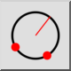
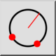
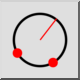
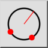

2 Punkte und Radius
Werkzeugleiste / Symbol:
 

Menü: Zeichnen > Kreis > 2 Punkte und Radius
Tastenkürzel: C, D
Kommandos: circleradius | cd
Werkzeugleiste / Symbol:
 

Menü: Zeichnen > Kreis > 2 Punkte und Radius
Tastenkürzel: C, D
Kommandos: circleradius | cd
Zeichnet einen Kreis mit zwei beliebigen Punkten auf der Kreislinie und dem Radius.